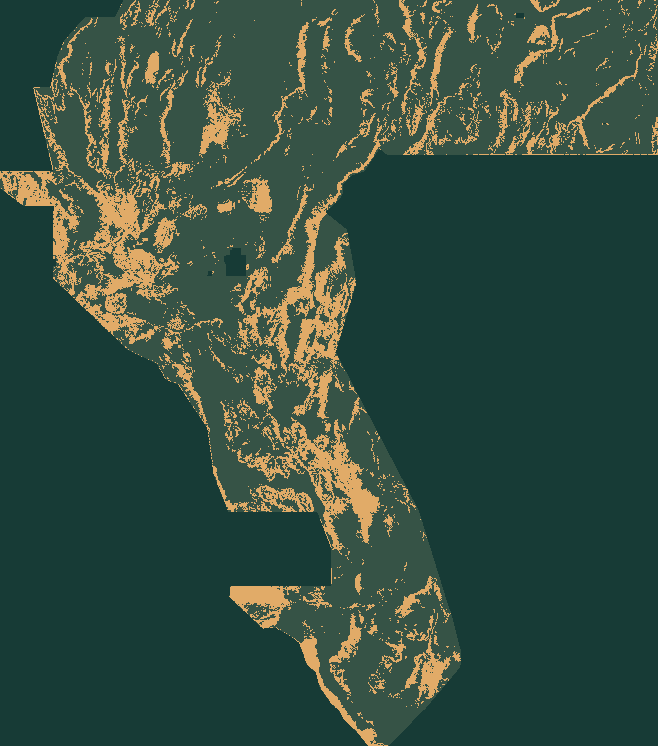

Data to download
Checksum-pinned mirror restoration, CPU training, geographic validation and a fail-closed raster writer.
Run the pipeline →A new fault detector using differential phase parity across topography, magnetics and gravity. Original predictions. Measured validation. One downloadable GeoTIFF.
RESEARCH DOWNLOAD · SUBMISSION GATE CLOSEDSingle-band float32 · EPSG:32611 · 100 m · all stored values in [0,1]

Earlier leading artifacts improved the economics of the distance-weighted metric by thinning dots and pruning catalogue flanks. This experiment changes what is detected: step-like boundaries versus symmetric ridges, at two spatial scales.
Read the scientific argument →The model was trained from supplied features. No previous submission was blended into it. Its pixels differ from all 309 comparable prior raster blobs checked; 2 more had incompatible grids or bands.
This is an inventory-scoped audit, not proof about unavailable historical artifacts. Neither these predictions nor the 0.2085 local proxy score establish a new geothermal discovery.
Inspect the uniqueness receipt ↗Both arms use the same classifier, sampling and spacing. The candidate adds 15 bounded phase-parity descriptors to 31 baseline features. A separate quadrant selects the emission budget; 3 km split-line exclusions prevent nearby train/test contamination.
| Quadrant | Baseline DTI | Phase DTI | Paired Δ | Truth pixels |
|---|---|---|---|---|
| 01 | 0.165132 | 0.165466 | +0.000334 | 28,135 |
| 02 | 0.248154 | 0.265539 | +0.017386 | 12,033 |
| 03 | 0.175398 | 0.182716 | +0.007318 | 8,463 |
| 04 | 0.183651 | 0.220362 | +0.036711 | 8,817 |
Mean baseline 0.193084 → candidate 0.208521. Catalogue-transfer proxy only. The 0.2778 incumbent was pruned away from these labels, so using it as a baseline here would manufacture a misleading win.
Protocol, raw results & limitations →Checksum-pinned mirror restoration, CPU training, geographic validation and a fail-closed raster writer.
Run the pipeline →Official statements, measured results, reported scores and scientific hypotheses remain separate.
Open the evidence register →A catalogue proxy win is a research signal, not permission to claim a winning submission.
Read the submission gate →The official 2026-10-06 research snapshot shows 0.3345, not the prompt’s 0.3195. No organizer score exists for H45.
Dated research snapshot; checking the automated source-health feed…
Source-health log ↗ · Official leaderboard ↗